# Hacking Firmware 2 or, "intro to software reverse engineering" -- <!-- .slide: data-background-transition="none" data-background="./images/family.png" --> Note: I'm Jordan -- <!-- .slide: data-background-transition="none" data-background-color="white" data-background-size="contain" data-background="./images/binja.png" --> Note: I'm one of the developers behind Binary Ninja -- ## You? Who has... - written Python? - used a debugger? - used a disassembler? - used a decompiler? - written a decompiler plugin? Note: Like Ghidra, Hex-Rays, Binary Ninja, or angr -- ## Goals After this training, you should: - understand the basics of software RE - be able to open/navigate an extracted binary across files/platforms - be able to recover program understanding - BONUS: write plugins to automate tasks -- ## Outline - RE Tooling Landscape - SW Reverse Engineering - Binary Ninja Overview - Examples --- # RE Tooling - ✅ File Identification (yesterday!) - ☑️ Disassembly - ☑️ Decompilation See also: https://github.com/wtsxDev/reverse-engineering Note: there are of course _many_ other tools and techniques besides this including hex Editors, file carvers, etc. See the GH repo for many more. -- ## Disassembly - You answer! <!-- .element: class="fragment" --> Note: -- ## Decompilation - You answer! <!-- .element: class="fragment" --> -- ## Decompilers - [Angr](https://angr.io/) (Free/Open Source) - [Binary Ninja](https://binary.ninja/) ($) - [Ghidra](https://ghidra-sre.org/) (Free/Open Source) - [Hex-Rays](https://hex-rays.com/) ($$) Try them all and then some! https://dogbolt.org/ Note: describe pros, cons of each --- # <!-- Binary Ninja --> <!-- .slide: data-background-transition="none" data-background-color="white" data-background-size="contain" data-background="./images/headshot.png" --> Note: introduction to binary ninja -- ## Quick Overview - Website - Help Docs - Student Discount - FAQ -- ## Basics - Loading files - Navigating - Views - Plugins - Command-Palette -- ## Lab 1 `candypop` --- # Introduction to ILs <style> .intro-to-ils { display: grid; grid-template-columns: auto auto auto auto auto auto auto; justify-content: center; } .compilation-flow-element { padding: 10px; margin: 10px; border: 3px solid red; border-radius: 8px; background-color: gray; width: 200px; } </style> <!-- Factor out "center" to the outer div for not-same-sized boxes --> <div class="intro-to-ils"> <div class="compilation-flow-element center-box">Source Code</div> <div class="center-box">→</div> <div class="compilation-flow-element center-box">AST</div> <div class="center-box">→</div> <div class="compilation-flow-element center-box">IR</div> <div class="center-box">→</div> <div class="compilation-flow-element center-box">Machine Code</div> <div class="fragment center-box"><code style="font-size: 16px;">A + B;</code></div> <div></div> <!-- Made with: https://mermaid.live/edit#pako:eNpNT11LxDAQ_CthoTTFXrlcP5LLg9Byr4KgT5KXcI1e0KYlpuBZ8t_d9hTcp9mZYWdngfPYG5CQJIt1NkiypOFiBpPKtNf-PY0xSZR783q6kOeTcgTnkex296T9v3S_C6V3WXbDLaXtH-4o7bIMchiMH7TtMXBZFQVbmAKJcM1ToFxEn57D-HR1Z5DBzyaHeep1MCer8ZMB5Kv--ETW9DaM_uHWYCuSw6QdyAW-QB6qQ8ErVvGGl6xmgudwRbbZFyUXR3asRF2zksUcvscRj-6LuhGlQGcpGEM_3669bOL6RvwBditU4w --> <div class="fragment center-box"></image></div> <div></div> <div class="fragment center-box"><code style="font-size: 16px;">add(var('A'), var('B'))</code></div> <div></div> <div class="fragment center-box"><code style="font-size: 16px;">add rax, rbx</code></div> </div> Notes: (BNToK #13, #28) Very brief reminder from your introduction to compilers class. Compilers normalize programs into ILs/IRs to perform analysis/optimizations on a syntactically simpler language. gcc has an internal IL it uses. LLVM allows many languages to provide their own front-ends, and then LLVM can output to tons of backends -- <div style="display: grid; grid-template-columns: auto auto auto; justify-content: center;"> IL <!-- .element: style="padding: 10px;" class="center-box r-fit-text" --> vs <!-- .element: style="padding: 10px;" class="center-box" --> IR <!-- .element: style="padding: 10px;" class="center-box r-fit-text" --> </div> -- <!-- .slide: align="left" --> #### Not to be confused with... <!-- .element: align="center" --> Intermediate Language (IL) Intermediate Representation (IR) Bitcode Bytecode Microcode Virtual Machine Opcodes P-Code Notes: **ILs**: See above **IRs**: See above **Bitcode**: LLVM's thing **Bytecode**: The same as Virtual Machine Opcodes **Microcode**: IDA's IL **Virtual Machine Opcodes**: The code many interpreted languages compile/JIT down to (Ethereum (EVM, always runs in a VM), Java, JavaScript, Python, MatLab?, etc) **P-Code**: is both the name of a specific implementation of an IL as well as a generic name for a portable machine code, another synonym for ILs. -- <!-- .slide: align="left" --> ### So what? Why ILs? <!-- .element: align="center" --> #### The premise <!-- .element: align="center" --> **Reverse Engineering** is fundamental to understanding how software works. **Intermediate Languages** are fundamental to modern compiler design. **Intermediate Languages** should, therefore, be fundamental to how reverse engineering works. Notes: You can also say "it works really well for LLVM, and they can support so many different input language and output platforms," but that's just making the same point; gcc also has an IR, it's just not as exposed/extendable as LLVM's. -- ### So what? Why ILs? #### The promise - Smaller set of instructions - Amenable to program analysis - Write once, ~~run~~ pwn anywhere Notes: Most intermediate languages have an extremely small set of instructions in them. Of course, there’s an inherent tradeoff between simplicity of the instruction set and the expressiveness. Many program analysis algorithms require specific formats to operate. Several forms are designed to work well with static data flow, with SMT solvers, etc Write your plugin once, run it on multiple architectures -- #### Tradeoffs <style> .tradeoffs { display: grid; grid-template-columns: auto auto auto; justify-content: center; } </style> <div class="tradeoffs"> <div class="center-box bn-box">Verbose</div> <div class="center-box">↔</div> <div class="center-box bn-box">Concise</div> <div class="center-box">↕</div> <div class="center-box"></div> <div class="center-box">↕</div> <div class="center-box bn-box">Simplified Instruction Set</div> <div class="center-box">↔</div> <div class="center-box bn-box">Explicit Instructions</div> <div class="center-box">↕</div> <div class="center-box"></div> <div class="center-box">↕</div> <div class="center-box bn-box">Easy to Parse</div> <div class="center-box">↔</div> <div class="center-box bn-box">Easy to Lift</div> </div> Notes: Do you want verbose or concise ILs? Do you want verbose ILs or a simplified instruction set? etc -- #### Tradeoffs <div class="tradeoffs"> <div class="center-box bn-box">Types</div> <div class="center-box">↔</div> <div class="center-box bn-box">Untyped</div> <div style="padding: 16px"></div><div></div><div></div> <div class="center-box bn-box">Explicit Flags</div> <div class="center-box">↔</div> <div class="center-box bn-box">Deferred Flags</div> <div style="padding: 16px"></div><div></div><div></div> <div class="center-box bn-box">Accommodates Problematic Architectures</div> <div class="center-box">↔</div> <div class="center-box bn-box"><div>Significantly Easier To Lift</div> </div> Notes: Do you want a typed or untyped il? Explicit or deferred? etc --- # Memory -- ## Segments - "Real" - Load addresses -- ## Sections - "Fake" - Informational - DataFlow implications Note: UI, API, explanation -- ## Lab 2 - `teensy.avr.teensy36 / ` `CANStreamOverWiFi.ino.elf` - How many segments? - How many sections? -- ## Firmware What if you don't have any of that? Note: and most of the time, you won't for firmware! -- ## Lab 3 - Open `u-boot-armv7.bin` - Where should it be rebased to? (Hint, "Triage View") Note: notice the predicted architecture? Correct: 0\x43e00000 -- # Other resources - Processor manuals (similar to the HW Hacking lab!) - [SVD Files](https://github.com/ehntoo/binaryninja-svd) - [Symgrate2](https://symgrate.com/) Note: no tool will be perfect out of the box, so it's important you understand the limitations of each tool and can work-around limitations if you need to. Good hackers are resourceful. --- ## API Note: Binary Ninja's greatest strength, show the API basics --- ## Bonus Exercise - Bootrom --- ## Resources - https://binary.ninja/ - https://docs.binary.ninja/ - https://slack.binary.ninja/ - Join the #ninjas-in-training channel -- ## Questions? - https://github.com/psifertex/ct_2024 - https://twitter.com/psifertex  -- ## Credits / Acknowledgements - [reveal-md](https://github.com/webpro/reveal-md) - [CAN-Logger-3](https://github.com/SystemsCyber/CAN-Logger-3)